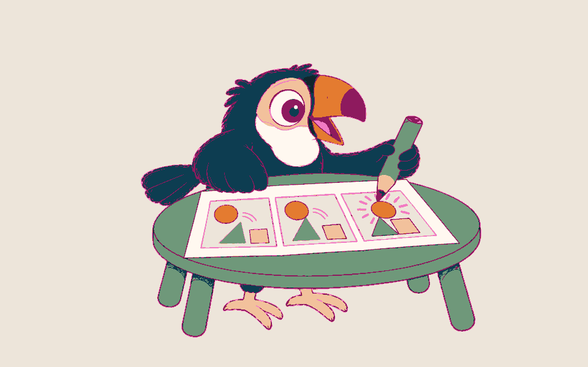
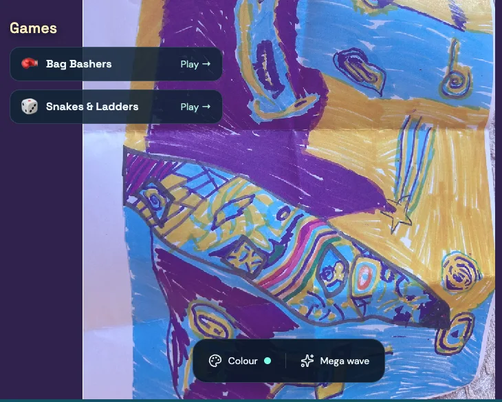

Interests first
Lessons built around what they love, so learning feels like theirs.
One-to-one help with schoolwork, confidence and SEND, online or in person.
Your first session and learning assessment are free. After that, from £40 per hour.
The first session is about an hour. Your written learning assessment arrives within two days and is yours to keep whether or not you continue. It is a tutor's assessment of how the learner learns, not a clinical or formal SEND assessment.
Tell us the subject and level, and we'll match the right tutor.
One-to-one support for learners with ADHD, autism, dyslexia, DLD and anxiety, led by our founder, a psychology graduate and SEN specialist.
Lessons built around what they love, so learning feels like theirs.

Lots of help at first, then we step back as confidence grows.

Breaks when they need them, and no pressure in the first sessions.

A written report every week, read by our founder.

Primary maths up to GCSE Higher. We look beneath the error: a missing concept, language, working memory, anxiety or pace.

Primary English, writing confidence and GCSE English, built around what they like reading and writing about.

Spanish, plus French up to GCSE or just for conversation, and English support for Spanish speakers.

Drawing, design and making, for the learner who thinks best with a pencil in their hand.

IB and A-level Psychology with our founder: papers, 16-markers, exam technique, the IA and Extended Essay.

Ask. We'll tell you honestly whether we have the right tutor for the subject and level.
We don't guarantee grades.

GCSE English and maths

Year 8 · Writing and design

Primary
Shared with each family's permission, with names removed.

A proper session to get to know them, not a sales call.
Written by their tutor, read by our founder.
We review and refine their plan every week.

Pay weekly. Cancel or reschedule any time. We ask for 24 hours' notice where you can give it, and we're flexible when life gets in the way.
Share the broad goal and current difficulty. If access or safe matching needs discussion, simply request a private conversation.